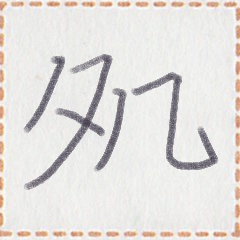
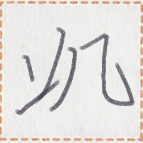
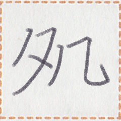
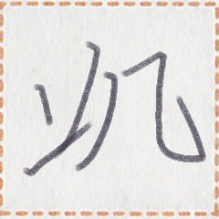

← Previous
Index
Next →
English: Mr. Putt does not have a cell phone.
Chinese: 星先生没有手机。
Chinese (pinyin): Xīng xiānsheng méi yǒu shǒujī.
Pekzep (latin transcription): pet2 xizi mun1 hop1 hop1 zep1 kik1.
Pekzep (hanzi transcription): 星xizi無手手言機。
Pekzep (linzklā):  



Sound:
Analysis: